UDN
Search public documentation:
ParticleSpriteSubUVEmitterTutorialCH
English Translation
日本語訳
한국어
Interested in the Unreal Engine?
Visit the Unreal Technology site.
Looking for jobs and company info?
Check out the Epic games site.
Questions about support via UDN?
Contact the UDN Staff
日本語訳
한국어
Interested in the Unreal Engine?
Visit the Unreal Technology site.
Looking for jobs and company info?
Check out the Epic games site.
Questions about support via UDN?
Contact the UDN Staff
粒子子 UV 教程
概述
创建一个新的粒子系统
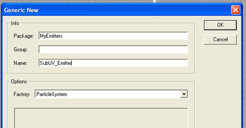
输入以下信息：| Package(包) | MyEmitters |
| Group(组) | |
| Name(名称) | SubUV_Emitter |
| Factory(工厂) | 应该在 ParticleSystem 中 |
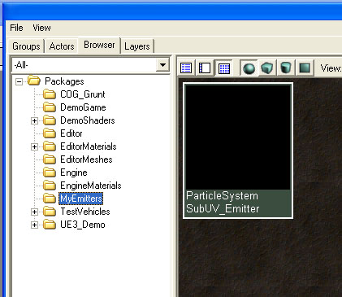
导入贴图
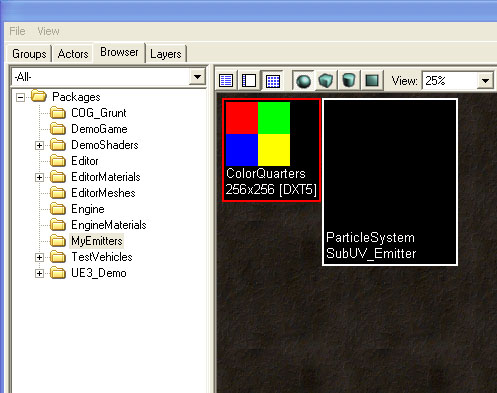
创建一个 ParticleSubUV 材质
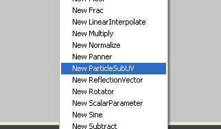
以下材质表达式控件将会出现在编辑器中：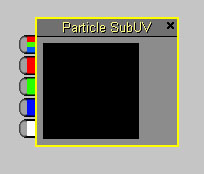
下一步是将 SubUV 表达式和材质的输出相连接。在这个简单的例子中，只要将RGB的输出端连接到 Emissive 的输入端、将 Alpha 输出端连接到 Opacity 输入端，如下所示：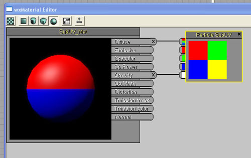
如果需要，材质的混合模式可以根据您希望粒子如何进行描画来设置。在这个实例中，我们将使用 "BLEND_Translucent" 模式，所以选择它，如下面的屏幕截图所示：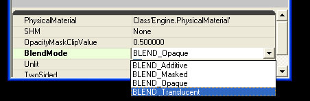
到目前为止的视图
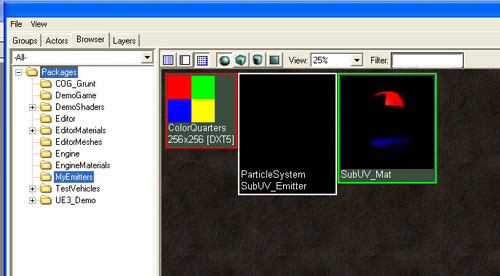
创建粒子子 UV 发射器
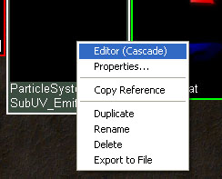
只要打开了 Cascade，在内容浏览器中选择 SubUV_Mat 并右击 `emitter bar(发射器条)' 同时选择 "New ParticleSpriteEmitter(新建 ParticleSpriteEmitter)"，如下所示：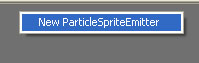
在这时，您应该在 Cascade 中看到以下信息，在预览窗口中显示了新创建的粒子发射器：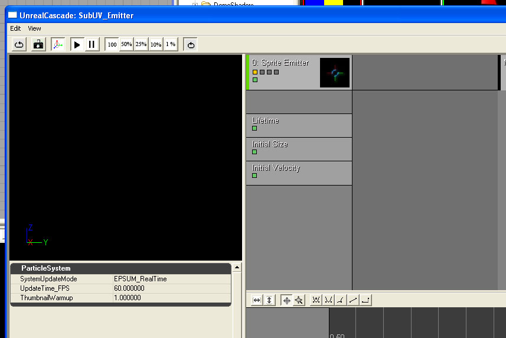
位于 'Required（需要的）' 类中的是与子UV 相关的设置： InterpolationMethod(插值方法)、贴图的水平方向及垂直方向上子图像的数量。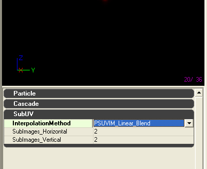
设置子 UV 参数
| SubImages_Horizontal(水平方向的子图像数量) | 2 |
| SubImages_Vertical (垂直方向的子图像数量) | 2 |
| InterpolationMethod (插值方法) | PSSUV_Linear |
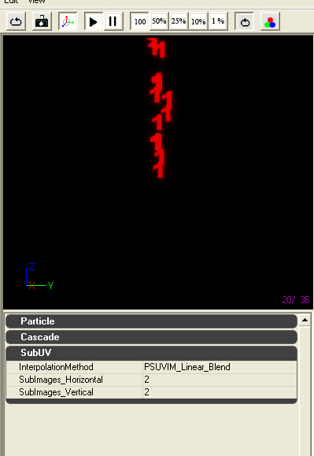
正如您所看到的，发射器正在从提供的贴图中选择‘第一个’子图像，因为默认的子图像索引是常量 0。设置子图像选项
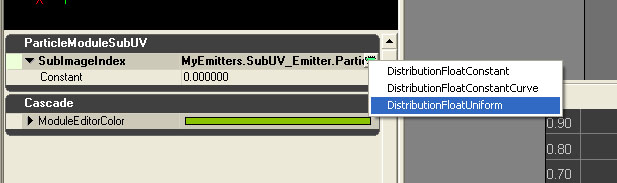
通过在蓝色箭头上点击并从列表中选择一个 Constant Curve（常量曲线）将分布转换为一个常量曲线。 点击在发射器的 SubImage Index 模块上的绿色 '图示按钮' 来将曲线添加到曲线编辑器中。
点击在发射器的 SubImage Index 模块上的绿色 '图示按钮' 来将曲线添加到曲线编辑器中。
 添加一条使用以下增量的数据点的曲线：
添加一条使用以下增量的数据点的曲线：
| 时间 | 值 |
| 0.00 | 0.00 |
| 0.75 | 3.01 |
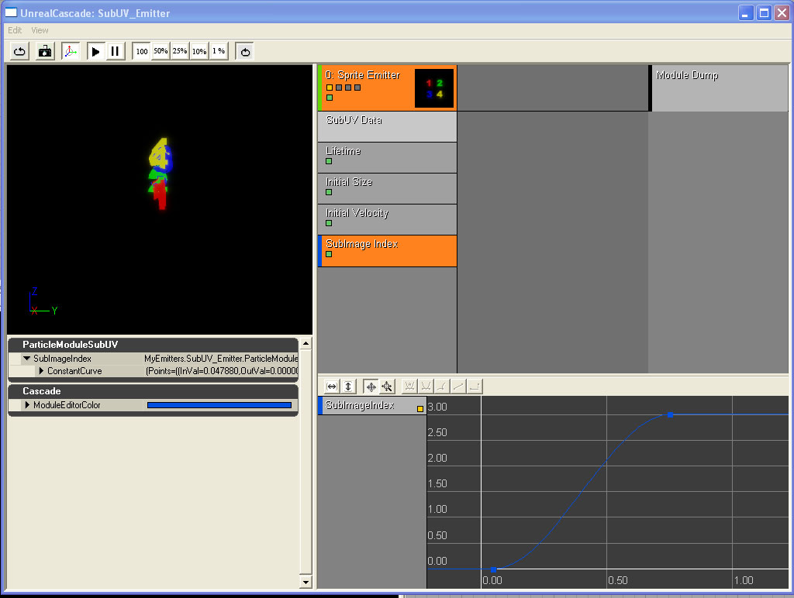
MyEmitter 可以在这里获得。